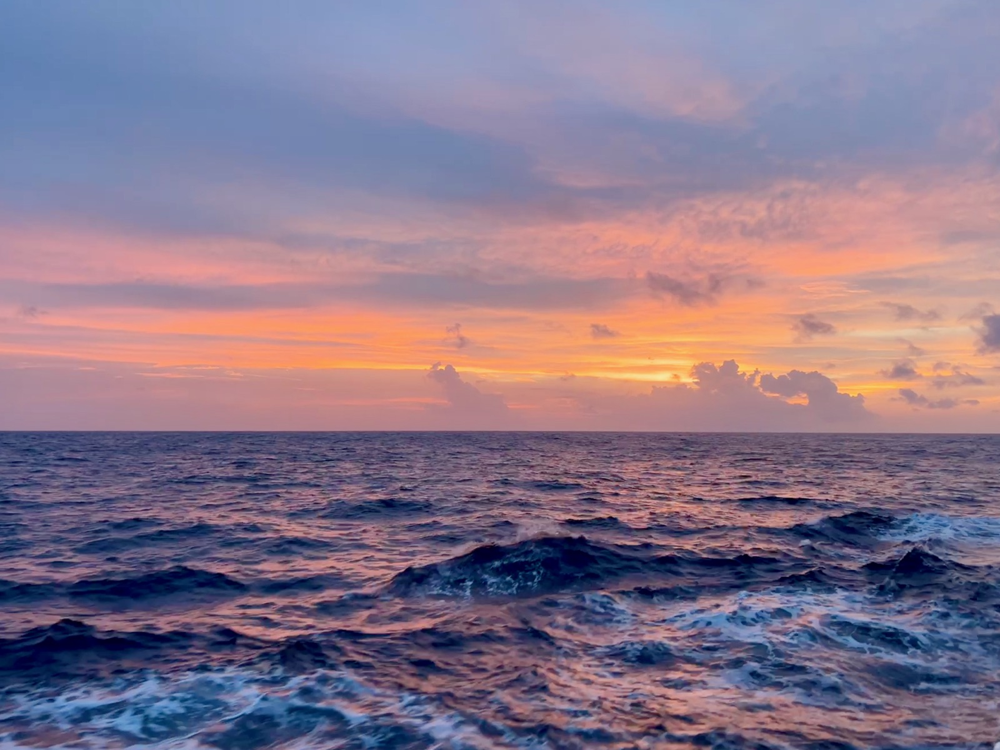
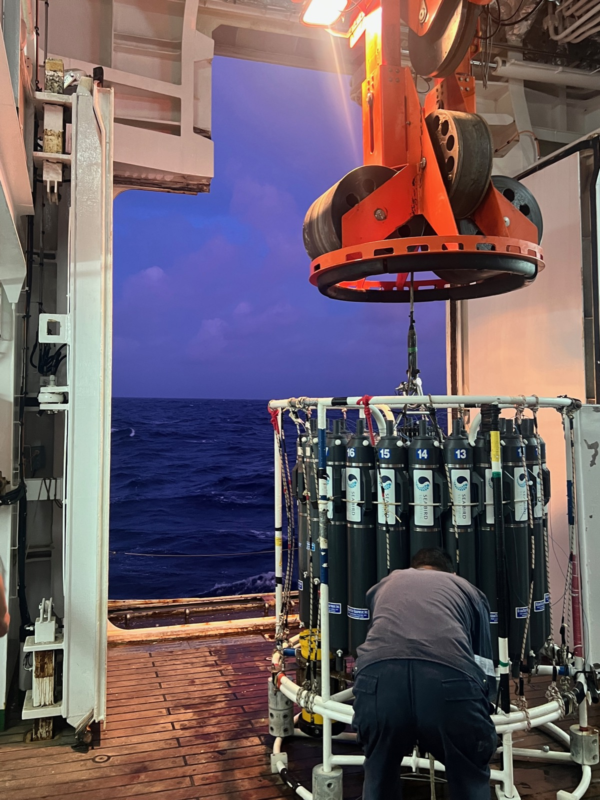
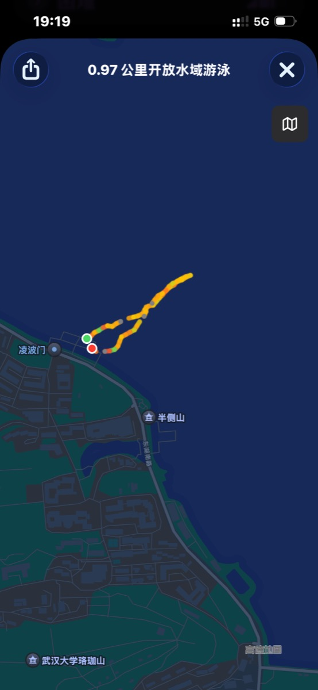
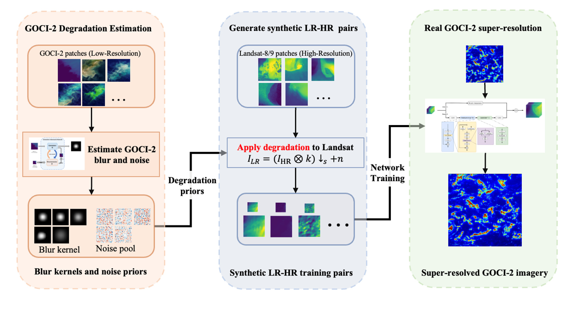
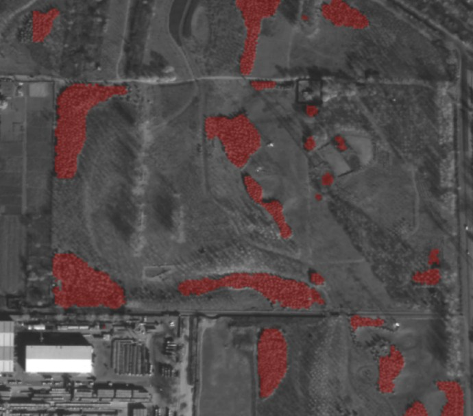
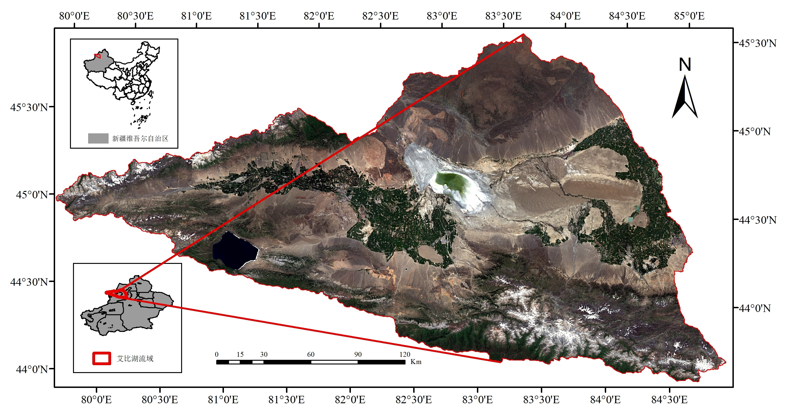
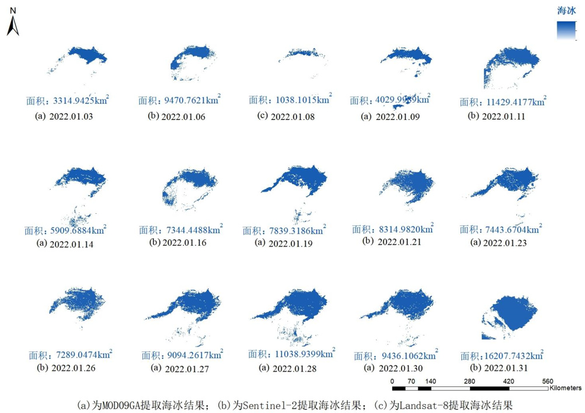

2026
8-9月
南海北部科考航次
8月中旬至9月中旬参加南海北部科考航次，开展海洋观测与CTD采水作业


About
Hi，我是叶志远，目前在厦门大学读硕士，主要研究水色遥感和图像超分辨率。
平时会关注技术，喜欢骑行、游泳、台球和旅行，曾经参加过南海科考。
这个网站用来记录我的研究、生活，以及一些偶尔冒出来的想法。
Updates
8月中旬至9月中旬参加南海北部科考航次，开展海洋观测与CTD采水作业


在武汉东湖凌波门完成开放水域游泳，游程约0.97公里

负责森林分割软件的跨平台部署与环境配置（Conda）、TensorRT 推理加速、影像预处理提速，以及软件 bug 修复与研制报告撰写
Projects & Work
从遥感数据处理、模型设计到软件部署与工程落地，点击卡片查看完整介绍。

构建真实退化数据、搭建深度学习模型W-MREA，进行遥感影像的 8 倍超分辨率并应用于浒苔监测、海表流场反演等工作。

负责森林分割软件的工程落地：进行软件的跨平台部署、Conda 环境配置、TensorRT 推理加速、影像预处理提速与bug 修复。

处理 1,712 景 Landsat-8 影像，重建长期植被覆盖度序列，结合不同植物的物候特征使用随机森林方法进行地物分类。

负责海冰提取算法与代码实现，结合多源遥感开展冰情分析，《辽东湾海冰监测系统》软著已授权。
Blog
科研笔记、技术分享、奇思妙想与生活随笔，点击卡片或「查看全部文章」进入博客。
在南海科考航次的某个夜晚，我第一次真正感受到宇宙的浩瀚与时间的漫长。
Travel
左右滑动查看完整地图
Contact
LET'S CONNECT
关于遥感研究、项目合作，或任何想交流的话题，都可以通过邮件联系我。